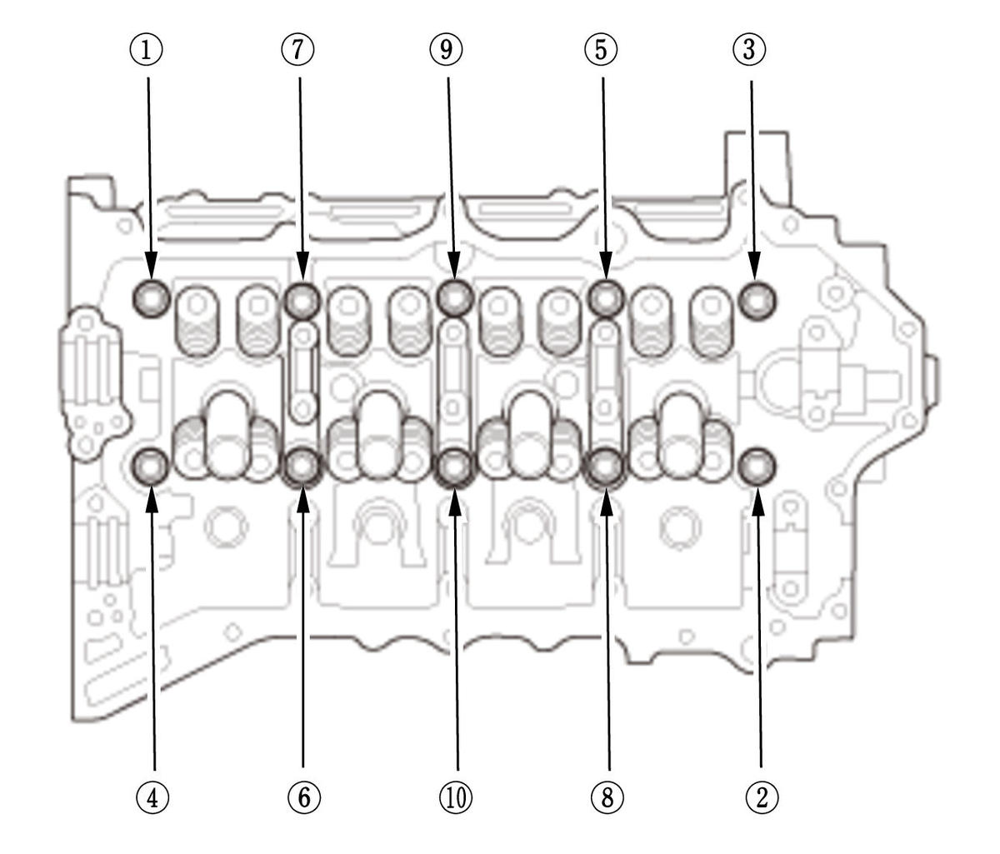

Cylinder Head Removal and Installation (L15B7): Removal
WARNING:
NOTE:
- Use fender covers to avoid damaging painted surfaces.
- To avoid damage, unplug the wiring connectors carefully while holding the connector portion.
- Connect the HDS to the DLC , and monitor ECT SENSOR 1. To avoid damaging the cylinder head, wait until the engine coolant temperature drops below 100°F (38°C) before loosening the cylinder head bolts.
- Mark all wiring and hoses to avoid misconnection. Also, be sure that they do not contact other wiring or hoses, or interfere with other parts.
- Keep the cam chain away from magnetic fields.
- The cylinder head bolts can be reused unless there is damage.
- Fuel Pressure - Relieve
- Intake Air Resonator - Remove
- Engine Coolant - Drain
- 12 Volt Battery - Remove
- Air Cleaner - Remove
- Intake Air Duct - Remove
- Intake Air Duct E - Remove
1. Disconnect the connectors (A). 2. Remove the harness clamps (B).
3. USA and Canada models: Disconnect purge tube D.
4. Remove intake air duct E.
- TWC Assembly - Remove
- Turbocharger - Remove
- VTC Oil Control Solenoid Valve B - Remove
- Intake Manifold - Remove
- High Pressure Fuel Pump - Remove
- Injector - Remove
- Harness Holder Mounting Bolt - Remove
- Cylinder Head Cover - Remove
- EVAP Canister Purge Valve - Remove
- CMP Sensor A/B - Remove
- High Pressure Fuel Pump Base - Remove
1. Remove the ground cables (A). 2. Remove the harness holders (B).
3. Disconnect the heater hoses (A). 4. Remove the heater hose bracket (B) and the harness holder bracket (C).
5. Remove the cam holder cover (A). 6. Remove the high pressure fuel pump base (A). - Thermostat Housing - Remove
- Cam Chain - Remove
- Camshaft - Remove
- Rocker Arm Assembly - Remove
- Cylinder Head - Remove

Courtesy of HONDA, U.S.A., INC.1. Remove the cylinder head bolts. To prevent warpage, loosen the bolts in sequence, 1/3 turn at a time, repeat the sequence until all bolts are loosened. 2. Remove the cylinder head.